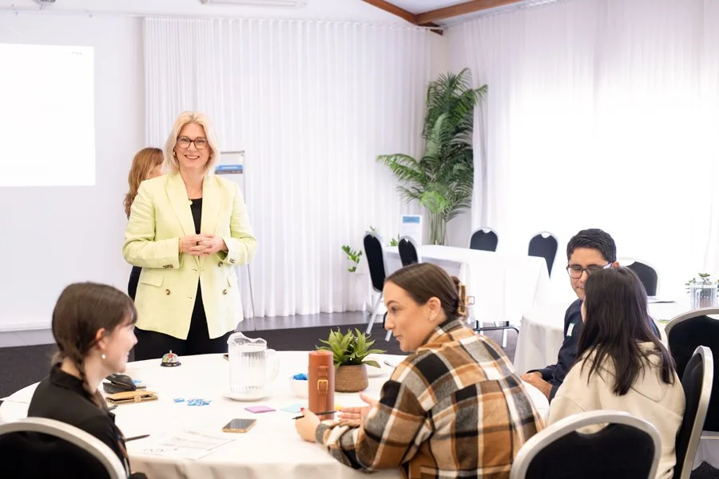

From good intentions to effective action.
A range of services designed around your needs and context, not a standard methodology.

Macaulay Consulting offers six core areas of practice, each scoped to the specific context of the organisations it serves. Engagements range from a single facilitated session to multi-month programmes spanning strategy, research and culture work.
Whether you need a board retreat, a co-design process with service users, an evaluation of an existing programme, or a sustained piece of team culture work, the starting point is always the same: a conversation about what you are actually trying to achieve.
Caroline works with organisations across health and human services, the community sector, government, legal aid and the private sector, with particular depth of expertise in services for children, young people and families.
Strategy and Planning
Strategic planning facilitation for boards, executive teams and leadership groups. Purpose, priorities and plans that people understand and commit to.
Learn more about Strategy and Planning →Co-design
Human-centred design processes that build solutions grounded in the real experience of service users, staff and communities.
Learn more about Co-design →Facilitation
Workshop and event facilitation that creates genuine engagement and produces outcomes people remember and act on.
Learn more about Facilitation →Evaluation and Research
Qualitative programme evaluation and research that captures what data alone cannot, and helps decision-makers act on it.
Learn more about Evaluation and Research →Culture
Structured team culture work, including the More Joy at Work programme, drawing on emotional culture research, neuro-leadership and psychological safety practice.
Learn more about Culture work →Child and Youth Work
Specialist facilitation, co-design and engagement with children, young people and the organisations that serve them, grounded in fifteen years of frontline practice.
Learn more about Child and Youth Work →Five things that shape every engagement
Clarity
Cutting through complexity to define a clear path forward.
Collaboration
Working with you, not just for you.
Compassion
Emotional intelligence is not a soft skill. It is the foundation of effective change.
Playfulness
Purposeful lightness makes hard conversations more productive, not less.
Positive Ripple Effects
Every engagement is designed to leave your organisation stronger than it found it.
What does working with Macaulay Consulting actually look like?
Most engagements begin with a scoping conversation — a genuine exchange to understand what the organisation is working with, what has been tried, and what kind of support would actually make a difference. There is no standard package, no off-the-shelf methodology applied regardless of context.
From there, Caroline proposes an approach calibrated to the problem: the right structure, the right process, the right level of involvement. The work itself ranges from a single half-day planning session to a multi-month programme of facilitation, research and culture work.
Clients consistently describe the process as both rigorous and human — structured enough to produce results, flexible enough to honour complexity. See recent examples of the work.
"The best facilitation I've witnessed — so genuine."Workshop Participant — Social Policy Team Planning Day, Queensland Health
Not sure which service fits your situation?
Start with a call. Caroline will listen to what you are working with and help you work out what kind of support would actually make a difference.